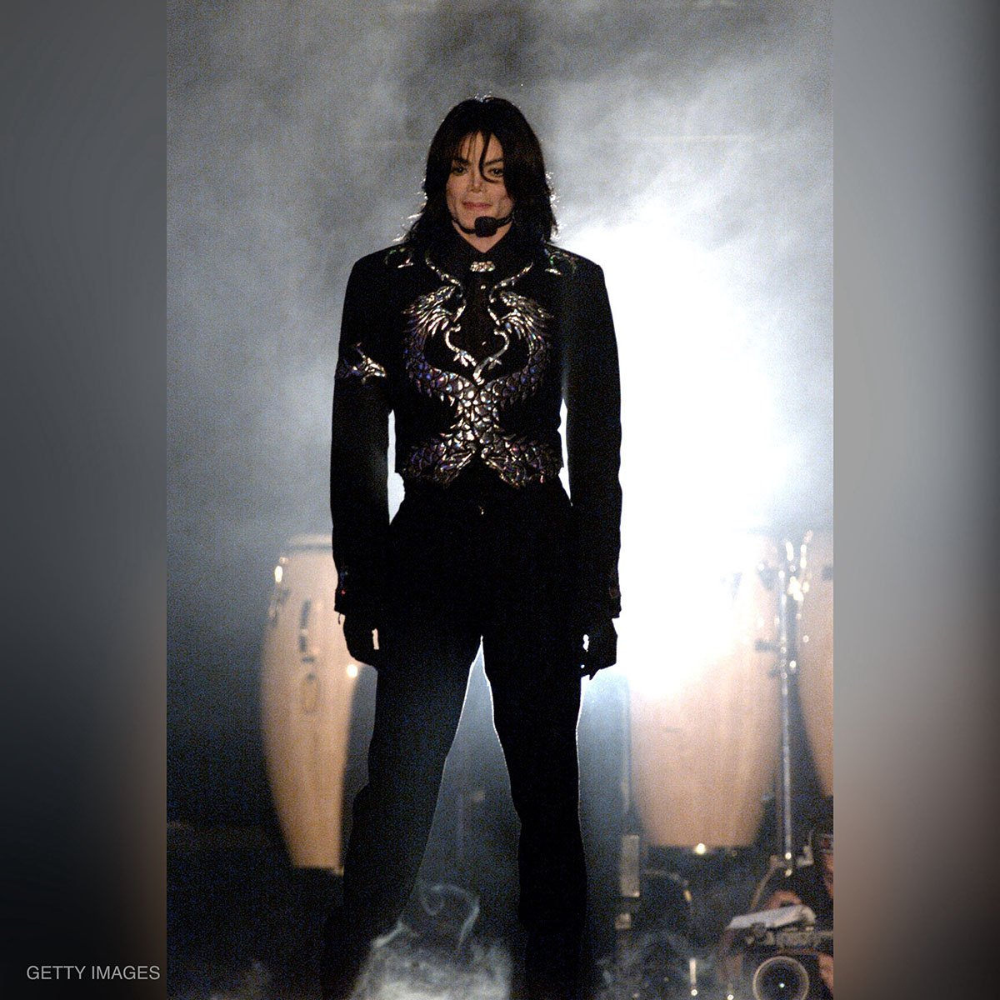

L'inizio della carriera con i Jackson 5 (1964-1976)
 Cresciuto quindi in una famiglia dedita alla musica, Michael entrò in contatto con il mondo dello spettacolo fin dalla più tenera
età. Cantò per la prima volta in pubblico, di fronte ai suoi compagni di classe e ai familiari, durante una recita di Natale
nella sua scuola materna eseguendo il brano Climb Ev'ry Mountain a cappella, mostrando una grande maestria, nonostante l'età, e
ricevendo una standing ovation; dopo che la madre scoprì per caso anche le sue doti di ballerino,nel 1964 fu
aggregato dal padre nel complesso appena formato coi fratelli maggiori Jackie, Tito e Jermaine, che non aveva ancora un nome
definitivo. Dapprima Michael ne era il percussionista, ma in seguito iniziò a condividere il ruolo di cantante con il
fratello Jermaine e, una volta che si aggiunse anche Marlon, il gruppo prese il nome di The Jackson 5. Dopo aver
partecipato a vari talent dell'epoca, i Jackson 5 firmarono prima per la Steeltown, un'etichetta discografica di Gary, per la
quale
pubblicarono solo un paio di singoli, per poi essere portati all'attenzione del produttore discografico Berry Gordy, capo della
Motown Records, che li lanciò nel 1969.
Quando nel gennaio 1970 il loro singolo di debutto I Want You Back raggiunse la 1ª posizione della Billboard Hot 100, Michael
diventò il cantante più giovane ad essere arrivato alla prima posizione delle classifiche americane, all'età di 11 anni e 5 mese.
Con l'uscita dei successivi tre singoli, ABC, The Love You Save e I'll Be There, i Jackson 5 diventarono i primi artisti della
storia a debuttare con quattro singoli consecutivi al numero uno di Billboard, e il primo gruppo di teen idols di
fama internazionale. In seguito al successo del gruppo, la famiglia Jackson lasciò Gary e si trasferì a Encino, in
California, nel maggio 1971.
All'enorme successo con i suoi fratelli il giovane Michael incominciò ad alternare la sua carriera da solista, e grazie alla
Motown riuscì a registrare i suoi primi quattro album in studio da solista: Got to Be There e Ben nel 1972, Music & Me nel 1973 e
Forever, Michael nel 1975, i quali riscossero un discreto successo vendendo più di 20 milioni di copie in tutto il mondo. La
canzone Ben, estratta dall'album omonimo, diventò il primo singolo numero uno nella sua carriera da solista, vinse un Golden
Globe e fu nominata ai Premi Oscar come miglior canzone, trattandosi del brano portante di un film dello stesso nome.
L'interpretazione di Ben agli Oscar del 1973 fu una delle prime da solista della sua carriera.
Scaduto il contratto con la Motown nel 1976, i fratelli firmarono con la Epic Records. La Motown contestò però l'accordo,
intentando procedure legali, a causa delle quali i fratelli dovettero cambiare nome da The Jackson 5 a The Jacksons e
persero
Jermaine, che volle restare alla vecchia etichetta; a sostituirlo fu chiamato Randy, ultimogenito dei fratelli Jackson.
Cresciuto quindi in una famiglia dedita alla musica, Michael entrò in contatto con il mondo dello spettacolo fin dalla più tenera
età. Cantò per la prima volta in pubblico, di fronte ai suoi compagni di classe e ai familiari, durante una recita di Natale
nella sua scuola materna eseguendo il brano Climb Ev'ry Mountain a cappella, mostrando una grande maestria, nonostante l'età, e
ricevendo una standing ovation; dopo che la madre scoprì per caso anche le sue doti di ballerino,nel 1964 fu
aggregato dal padre nel complesso appena formato coi fratelli maggiori Jackie, Tito e Jermaine, che non aveva ancora un nome
definitivo. Dapprima Michael ne era il percussionista, ma in seguito iniziò a condividere il ruolo di cantante con il
fratello Jermaine e, una volta che si aggiunse anche Marlon, il gruppo prese il nome di The Jackson 5. Dopo aver
partecipato a vari talent dell'epoca, i Jackson 5 firmarono prima per la Steeltown, un'etichetta discografica di Gary, per la
quale
pubblicarono solo un paio di singoli, per poi essere portati all'attenzione del produttore discografico Berry Gordy, capo della
Motown Records, che li lanciò nel 1969.
Quando nel gennaio 1970 il loro singolo di debutto I Want You Back raggiunse la 1ª posizione della Billboard Hot 100, Michael
diventò il cantante più giovane ad essere arrivato alla prima posizione delle classifiche americane, all'età di 11 anni e 5 mese.
Con l'uscita dei successivi tre singoli, ABC, The Love You Save e I'll Be There, i Jackson 5 diventarono i primi artisti della
storia a debuttare con quattro singoli consecutivi al numero uno di Billboard, e il primo gruppo di teen idols di
fama internazionale. In seguito al successo del gruppo, la famiglia Jackson lasciò Gary e si trasferì a Encino, in
California, nel maggio 1971.
All'enorme successo con i suoi fratelli il giovane Michael incominciò ad alternare la sua carriera da solista, e grazie alla
Motown riuscì a registrare i suoi primi quattro album in studio da solista: Got to Be There e Ben nel 1972, Music & Me nel 1973 e
Forever, Michael nel 1975, i quali riscossero un discreto successo vendendo più di 20 milioni di copie in tutto il mondo. La
canzone Ben, estratta dall'album omonimo, diventò il primo singolo numero uno nella sua carriera da solista, vinse un Golden
Globe e fu nominata ai Premi Oscar come miglior canzone, trattandosi del brano portante di un film dello stesso nome.
L'interpretazione di Ben agli Oscar del 1973 fu una delle prime da solista della sua carriera.
Scaduto il contratto con la Motown nel 1976, i fratelli firmarono con la Epic Records. La Motown contestò però l'accordo,
intentando procedure legali, a causa delle quali i fratelli dovettero cambiare nome da The Jackson 5 a The Jacksons e
persero
Jermaine, che volle restare alla vecchia etichetta; a sostituirlo fu chiamato Randy, ultimogenito dei fratelli Jackson.
La maturazione artistica nei Jacksons e l'affermazione da solista con Off the Wall (1976-1981)
 Nel 1976, nell'album The Jacksons venne pubblicata la prima canzone scritta e composta da Michael, intitolata Blues Away, ma fu a
partire dal 1978 che il cantante, oltre ad essere il frontman dei Jacksons ne divenne anche l'autore principale, con la
collaborazione del fratello Randy. Per l'album Destiny, la Epic lasciò infatti per la prima volta carta bianca ai fratelli
Jackson, permettendo loro di scrivere e comporre ogni brano, ad eccezione del singolo di lancio Blame It on the Boogie; il
secondo singolo estratto, Shake Your Body (Down to the Ground), entrò nella Top 10 di Billboard e divenne il singolo di maggior
successo nella storia del gruppo.
Off the Wall venne pubblicato il 10 agosto 1979 ed ebbe un enorme successo diventando il primo album nella storia della musica a
piazzare nella Top 10 della Billboard Hot 100 quattro singoli: Don't Stop 'Til You Get Enough, Rock with You, Off the Wall e
She's Out of My Life. Anche nel Regno Unito l'album infranse lo stesso primato, con quattro brani entrati nella Top 10 della
Official Singles Chart.Off the Wall raggiunse inoltre la 3ª posizione della Billboard 200, rimanendo per 48 settimane
consecutive tra le prime 20 posizioni e arrivando a vendere oltre 15 milioni di copie in poco tempo, diventando all'epoca l'album
di un artista afroamericano più venduto della storia. L'album ad oggi ha venduto quasi 10 milioni di copie negli Stati Uniti e
circa 30 totali nel mondo.Jackson divenne anche il primo artista nero a essere riuscito a entrare in una classifica
per bianchi, rompendo così le barriere razziali e contribuendo a creare classifiche unificate.
L'album valse a Jackson anche diversi premi: nel 1980 vinse tre American Music Awards e un Grammy Award per l'interpretazione di
Don't Stop 'Til You Get Enough.
Nel 1976, nell'album The Jacksons venne pubblicata la prima canzone scritta e composta da Michael, intitolata Blues Away, ma fu a
partire dal 1978 che il cantante, oltre ad essere il frontman dei Jacksons ne divenne anche l'autore principale, con la
collaborazione del fratello Randy. Per l'album Destiny, la Epic lasciò infatti per la prima volta carta bianca ai fratelli
Jackson, permettendo loro di scrivere e comporre ogni brano, ad eccezione del singolo di lancio Blame It on the Boogie; il
secondo singolo estratto, Shake Your Body (Down to the Ground), entrò nella Top 10 di Billboard e divenne il singolo di maggior
successo nella storia del gruppo.
Off the Wall venne pubblicato il 10 agosto 1979 ed ebbe un enorme successo diventando il primo album nella storia della musica a
piazzare nella Top 10 della Billboard Hot 100 quattro singoli: Don't Stop 'Til You Get Enough, Rock with You, Off the Wall e
She's Out of My Life. Anche nel Regno Unito l'album infranse lo stesso primato, con quattro brani entrati nella Top 10 della
Official Singles Chart.Off the Wall raggiunse inoltre la 3ª posizione della Billboard 200, rimanendo per 48 settimane
consecutive tra le prime 20 posizioni e arrivando a vendere oltre 15 milioni di copie in poco tempo, diventando all'epoca l'album
di un artista afroamericano più venduto della storia. L'album ad oggi ha venduto quasi 10 milioni di copie negli Stati Uniti e
circa 30 totali nel mondo.Jackson divenne anche il primo artista nero a essere riuscito a entrare in una classifica
per bianchi, rompendo così le barriere razziali e contribuendo a creare classifiche unificate.
L'album valse a Jackson anche diversi premi: nel 1980 vinse tre American Music Awards e un Grammy Award per l'interpretazione di
Don't Stop 'Til You Get Enough.
Successo mondiale con Thriller ed esibizione al Motown 25 (1982-1984)
All'inizio del 1982, Jackson fu contattato dal regista Steven Spielberg, il quale lo invitò a prendere parte alla realizzazione
di un audiolibro del film E.T. l'extra-terrestre, conosciuto come E.T. Storybook, per il quale il cantante incise il brano
Someone in the Dark e narrò anche la storia del film, per il quale riceverà un Grammy Award nel 1984. Il cantante passò poi
gran parte dell'anno insieme con il produttore Quincy Jones ai Westlake Recording Studios di Los Angeles per registrare il suo
nuovo album in studio.
Il 30 novembre uscì Thriller, secondo album da solista dell'artista per la Epic, che divenne il suo più grande successo
commerciale. L'album si piazzò al primo posto della Billboard 200 e vi rimase per 37 settimane, più di ogni altro album in studio
nella storia della classifica.
Il 10 marzo 1983, con la messa in onda del video di Billie Jean, Michael Jackson divenne il primo artista di colore a essere
trasmesso su MTV
Spot per la Pepsi e Victory Tour, We Are the World e Captain EO (1984-1986)
 Il 27 gennaio 1984, Jackson e i suoi fratelli girarono uno spot pubblicitario per la Pepsi-Cola allo Shrine Auditorium di Los
Angeles. Il gruppo stava simulando un concerto davanti a migliaia di fan, quando i capelli di Michael presero accidentalmente
fuoco a causa di un imprevisto guasto pirotecnico durante l'esecuzione di Billie Jean. Il cantante riportò gravi ustioni di
terzo grado al cuoio capelluto e alla base della testa che arrivarono fino al cranio[163] e fu costretto a sottoporsi ad alcun
interventi di chirurgia plastica ricostruttiva a quest'ultimo.
Il 14 maggio il cantante venne invitato alla Casa Bianca dal presidente degli Stati Uniti Ronald Reagan, per ricevere un
premio dovuto al sostegno che aveva dato a enti benefici nella lotta contro l'alcol e la droga.
Nel gennaio 1985 scrisse insieme a Lionel Richie il singolo benefico We Are the World per raccogliere fondi destinati alle
popolazioni dell'Africa orientale, colpite in quel periodo da una grave carestia, registrandolo insieme ad un supergruppo di
altri 44 artisti denominato USA for Africa. Negli Stati Uniti il brano vendette più di sette milioni di copie in meno di quattro
mesi, diventando il singolo con le vendite più veloci di sempre, e rimase alla 1ª posizione di Billboard per un mese.
Il 27 gennaio 1984, Jackson e i suoi fratelli girarono uno spot pubblicitario per la Pepsi-Cola allo Shrine Auditorium di Los
Angeles. Il gruppo stava simulando un concerto davanti a migliaia di fan, quando i capelli di Michael presero accidentalmente
fuoco a causa di un imprevisto guasto pirotecnico durante l'esecuzione di Billie Jean. Il cantante riportò gravi ustioni di
terzo grado al cuoio capelluto e alla base della testa che arrivarono fino al cranio[163] e fu costretto a sottoporsi ad alcun
interventi di chirurgia plastica ricostruttiva a quest'ultimo.
Il 14 maggio il cantante venne invitato alla Casa Bianca dal presidente degli Stati Uniti Ronald Reagan, per ricevere un
premio dovuto al sostegno che aveva dato a enti benefici nella lotta contro l'alcol e la droga.
Nel gennaio 1985 scrisse insieme a Lionel Richie il singolo benefico We Are the World per raccogliere fondi destinati alle
popolazioni dell'Africa orientale, colpite in quel periodo da una grave carestia, registrandolo insieme ad un supergruppo di
altri 44 artisti denominato USA for Africa. Negli Stati Uniti il brano vendette più di sette milioni di copie in meno di quattro
mesi, diventando il singolo con le vendite più veloci di sempre, e rimase alla 1ª posizione di Billboard per un mese.
Bad (1987-1990)
ll 31 agosto 1987 uscì Bad, settimo album da solista di Jackson, Bad diventò il primo album della storia a debuttare in vetta
alle classifiche di 25 paesi del mondo, vendendo oltre 7 milioni di copie nella prima settimana di uscita.
Il 12 settembre del 1987 ebbe inizio da Tokyo il Bad World Tour, primo tour solista di Jackson; nel solo Giappone tutti i 14
concerti iniziali furono tutto esaurito e registrarono oltre 570.000 spettatori, battendo ogni precedente record giapponese.
Nel febbraio 1988 Jackson pubblicò l'autobiografia Moonwalk. Il libro divenne il best seller dell'anno, con oltre 450
000 copie vendute in pochi giorni.
In ottobre uscì Moonwalker. Il film fu proiettato in diversi paesi del mondo, Italia compresa e incassò 67 milioni di
dollari, mentre negli Stati Uniti uscì esclusivamente in home video nel gennaio 1989.
Dangerous (1991-1994)
 l 26 novembre uscì Dangerous, che debuttò alla 1ª posizione nella Billboard 200 e in altri 10 Paesi, vendendo oltre 40
milioni di copie a livello globale, 8 delle quali negli Stati Uniti, in virtù delle quali diventò
l'album new jack swing di maggior successo di tutti i tempi.
Il singolo di lancio dell'album, Black or White, raggiunse la 1ª posizione della Billboard Hot 100 in tre settimane, rendendolo
il brano più veloce a raggiungere la testa della classifica dal 1969, rimanendovi per sette settimane consecutive e
rendendo Jackson il primo artista della storia ad avere brani al numero uno di Billboard in tre diversi decenni, e il primo
artista americano a debuttare direttamente alla prima posizione nel Regno Unito dal 1960, eguagliando il record di Elvis Presley.
A gennaio del 1992 fu pubblicato il secondo singolo Remember the Time, accompagnato dal relativo videoclip ambientato nell'Antico
Egitto; costato 2 milioni di dollari e girato da John Singleton, vi parteciparono l'attore Eddie Murphy, la modella e
attrice Iman e il giocatore dell'NBA Magic Johnson.
l 26 novembre uscì Dangerous, che debuttò alla 1ª posizione nella Billboard 200 e in altri 10 Paesi, vendendo oltre 40
milioni di copie a livello globale, 8 delle quali negli Stati Uniti, in virtù delle quali diventò
l'album new jack swing di maggior successo di tutti i tempi.
Il singolo di lancio dell'album, Black or White, raggiunse la 1ª posizione della Billboard Hot 100 in tre settimane, rendendolo
il brano più veloce a raggiungere la testa della classifica dal 1969, rimanendovi per sette settimane consecutive e
rendendo Jackson il primo artista della storia ad avere brani al numero uno di Billboard in tre diversi decenni, e il primo
artista americano a debuttare direttamente alla prima posizione nel Regno Unito dal 1960, eguagliando il record di Elvis Presley.
A gennaio del 1992 fu pubblicato il secondo singolo Remember the Time, accompagnato dal relativo videoclip ambientato nell'Antico
Egitto; costato 2 milioni di dollari e girato da John Singleton, vi parteciparono l'attore Eddie Murphy, la modella e
attrice Iman e il giocatore dell'NBA Magic Johnson.
HIStory e Blood on the Dance Floor (1995-2000)
Il 16 giugno 1995 fu pubblicato il doppio album HIStory: Past, Present and Future - Book I, che esordì alla 1ª
posizione nella Billboard 200 e in altre 19 nazioni. Il primo disco, HIStory Begins, era un Greatest Hits di 15 successi di
Jackson, mentre il secondo, HIStory Continues, conteneva 15 brani inediti. HIStory ad oggi ha venduto 30 milioni di copie (60
milioni di unità) nel mondo, 8 delle quali negli Stati Uniti, cifre che lo rendono il doppio album più venduto di tutti
i tempi.
L'HIStory World Tour, la tournée in supporto dell'album, ebbe inizio il 7 settembre 1996 a Praga, davanti a 150 000 persone,
concludendosi il 15 ottobre 1997 a Durban, alla presenza del presidente Mandela. Il tour incluse 82 concerti in 35 nazioni,
per un totale di oltre 4,5 milioni di spettatori, e 165 milioni di dollari di incassi, risultati che lo decretarono il
tour di maggior successo della carriera di Jackson e, all'epoca, anche nella storia della musica, battendo i record precedenti
del suo stesso Bad World Tour. Il 14 novembre 1996, durante la tappa australiana del tour, il cantante si sposò per la seconda
volta, questa volta con la sua amica ed ex-infermiera Deborah Jeanne Rowe, in una cerimonia improvvisata nell'hotel in cui
soggiornavano a Sydney. Il 13 febbraio 1997 nacque il loro primogenito, Prince Michael.
Invincible e Number Ones (2001-2005)

Il 30 ottobre 2001 venne pubblicato Invincible, che esordì alla 1ª posizione in classifica negli Stati Uniti e in altri 10
paesi, e che ad oggi ha venduto oltre 13 milioni di copie nel mondo. I primi singoli estratti dall'album furono You
Rock My World, al cui video parteciparono Chris Tucker, Michael Madsen e Marlon Brando, e Cry, mentre il brano Butterflies
fu diffuso solo per radio. Poco prima dell'uscita di Invincible, Jackson aveva informato Tommy Mottola, allora presidente della
Sony Music, di non avere intenzione di rinnovare il contratto in scadenza con la casa discografica: l'abbandono del cantante
avrebbe comportato anche la perdita del 50% del catalogo Sony/ATV, che in quel momento valeva più di un miliardo di dollari.[480]
Nel 2002 pertanto, tutti i singoli, i video e le ulteriori promozioni per Invincible, oltre al rilascio del singolo di What More
Can I Give, furono cancellati dalla Sony.Secondo l'artista questa sarebbe stata una ripicca per la sua decisione di
lasciare l'etichetta e per far fallire il nuovo album; ne scaturì una guerra tra Jackson e la Sony con accuse reciproche;[484][
i suoi fan club organizzarono manifestazioni di protesta davanti alle sedi Sony di Londra e New York, alle quali prese parte lo
stesso cantante.
Ultima esibizione ai World Music Awards, Thriller 25 e King of Pop (2006-2008)
Il 15 novembre 2006 Jackson partecipò come ospite d'onore ai World Music Awards presso la Earls Court Arena di Londra.
Lì ricevette da Beyoncé il Diamond Award, per aver venduto più di 750 milioni di copie con i suoi album, mentre Craig Glenday,
caporedattore del Guinness dei primati, gli consegnò un premio speciale per Thriller e lo definì "indubbiamente il più famoso
essere umano vivente".
L'11 febbraio 2008, in occasione del 25º anniversario dell'uscita di Thriller, venne pubblicata una speciale riedizione
dell'album arricchita da materiale inedito, Thriller 25, che ha venduto ad oggi oltre 10 milioni di copie.
Il 29 agosto 2008, giorno del 50º compleanno di Jackson, uscì una nuova raccolta dal titolo King of Pop, un'antologia in cui
erano stati i fan stessi a votare per decidere i brani da inserire, per cui l'album uscì con una compilation diversa per ogni
paese. King of Pop non fu pubblicato negli Stati Uniti ma raggiunse la Top 10 di altri 17 paesi, vendendo circa 6 milioni di
copie. Quell'anno, gli album Off the Wall e Thriller vennero inclusi nella Grammy Hall of Fame, mentre la rivista Rolling Stone
inserì Jackson al 25º posto della sua classifica delle 100 migliori voci di tutti i tempi e al 35º posto della sua
classifica dei 100 migliori artisti di tutti i tempi.